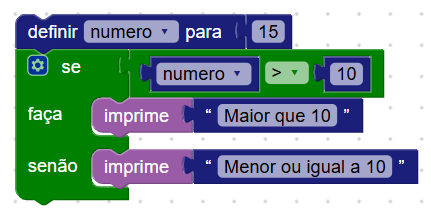
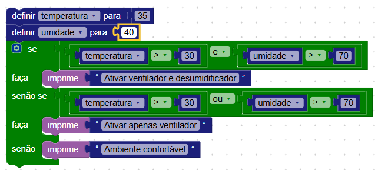

Nesta Seção
Lógica e Matemática
Os blocos de lógica e matemática são fundamentais na programação. Eles permitem criar condições, realizar cálculos, comparar valores e tomar decisões. Estão presentes em praticamente todos os tipos de projeto — desde a leitura de sensores, até o controle de motores e execução de ações com base em regras.
A categoria Matemática contém operações como soma, subtração, multiplicação, divisão, arredondamento, raiz quadrada, seno, mapeamento de valores, entre outros. Já a categoria Lógica oferece comparadores (como =, <, >), operadores lógicos (E, OU), e blocos de decisão como se, senão e senão se.
Exemplo 1: Verificar se um número fixo é maior que 10
Neste exemplo usamos os blocos se e senão para verificar se um valor fixo é maior que 10. O bloco de decisão (se) permite executar comandos apenas quando uma condição é verdadeira. A comparação é feita com o operador matemático >.
Este tipo de estrutura é muito comum em projetos de robótica — por exemplo, verificar se um sensor detectou um obstáculo para acionar ou parar um motor.
O que esse programa faz?
- Cria uma variável com o valor 15.
- Compara se o número é maior que 10.
- Se verdadeiro, imprime "Maior que 10", caso contrário imprime "Menor ou igual a 10".
A estrutura se → senão se → senão é criada clicando na engrenagem do bloco “se”. Com isso é possível criar condições múltiplas e tomar decisões mais completas. Isso é comum em projetos como robôs seguidores de linha, controle climático ou decisões baseadas em mais de um sensor.
Os resultados do teste são exibidos no console da plataforma. Para visualizar, clique na aba Console no canto superior da tela após executar o programa.
Exemplo 2: Converter valor analógico em porcentagem
Neste exemplo, pedimos ao usuário que digite um valor numérico no console para simular a leitura de um sensor. Em seguida, usamos o bloco mapear da categoria Matemática para converter esse valor (de 0 a 4095, por exemplo) em uma porcentagem entre 0 e 100.
O que esse programa faz?
- Pede ao usuário um valor numérico para simular uma leitura analógica.
-
Converte esse valor para uma porcentagem usando o bloco
mapear. - Imprime o valor original e o valor convertido (em %) no console.
O número é digitado diretamente no console, localizado na parte superior da tela. O valor convertido será exibido em seguida para acompanhamento da conversão em tempo real.
Exemplo 3: Controle de ventilação com “E”, “OU” e senão
Neste exemplo, simulamos a lógica de um sistema de ventilação inteligente que considera tanto a temperatura quanto a umidade do ambiente. Usamos operadores lógicos E e OU junto com blocos condicionais se e senão se para definir o comportamento do sistema com base nos valores.
Essa estrutura condicional é bastante útil em sistemas embarcados para automação, onde diferentes sensores devem ser combinados para decidir a ativação de dispositivos como ventiladores, exaustores ou alertas.
O que esse programa faz?
- Cria duas variáveis com valores fixos para temperatura e umidade.
- Se temperatura > 30 E umidade > 70, imprime "Ativar ventilador e desumidificador".
- Senão se temperatura > 30 OU umidade > 70, imprime "Ativar apenas ventilador".
- Senão, imprime "Ambiente confortável".
Os resultados das decisões são mostrados no console, permitindo acompanhar o comportamento lógico do programa.
Você pode alterar os valores das variáveis de temperatura e umidade para observar como o comportamento do programa muda. Isso ajuda a entender melhor o uso de condições combinadas e operadores lógicos em situações reais.